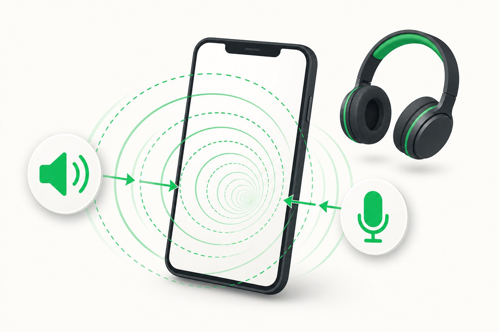

通知
LINEが開かないと通知が来ない？iPhoneで通知が表示されない原因と直し方【2026年版】
画面を閉じると、LINEの通知が来なくなった…。「設定→通知」のチェックポイントから、おやすみモード、背景リフレッシュまで、よくある原因を順番に解説します。
詳しく読む →通知が来なくなった、バックアップが止まった、通話で声が聞こえない…同じ悩みを抱えている人はとても多いです。このサイトでは、スマホの知識がなくても分かるよう、原因→確認方法→直し方を順番にまとめます。
Articles
「これだ！」という症状がございましたら、そのまま該当の記事へどうぞ。すべての記事は、iPhoneの画面設定を追って確認しながら書いています。
画面を閉じると、LINEの通知が来なくなった…。「設定→通知」のチェックポイントから、おやすみモード、背景リフレッシュまで、よくある原因を順番に解説します。
詳しく読む →
「30%で止まる」は、iCloudの残り容量やWi-Fi環境が原因であることが多いです。チェックリストに沿って確認すれば、多くの場合そのまま直せます。
詳しく読む →
相手から「声が聞こえない」と言われたら、まずマイクの許可とBluetoothの接続を見ます。原因別に、確認手順と直し方をまとめました。
詳しく読む →
チェックの数が進まない、相手から「届いてない」と言われた…自分の通信環境か、相手の環境かを見分ける方法と、対処の順番を解説します。
詳しく読む →
自分の声が遅れて返ってくる「エコー」。スピーカーとマイクの関係で起きていることが多く、イヤホン利用や音量調整など、実用的な直し方を解説します。
詳しく読む →Why
「なぜ起きるのか」を先に説明するから、対処が自分の中で腑に落ちます。同じ症状で何度も困りにくいのが特徴です。
「設定アプリを開いて→通知→LINE」と、画面の操作をそのまま番号付きリストで書きます。そのまま上から実行してください。
iPhone（iOS）の仕様は年々変わります。記事は最新版のiOSを基準に確認し、必要なときは「2026年版」などの表記で更新しています。
さらに詳しい解説は、メインサイト「テックコスパ」の対応記事へ。浅く広くではなく、深さが必要なら深い場所へ。
記事にない症状・解決しなかった症状は、メールでご相談ください。できる範囲でお返事します。
Sister site
スマートフォン・PC・AI・ソフトウェアの解決記事がもっとたくさんあります。